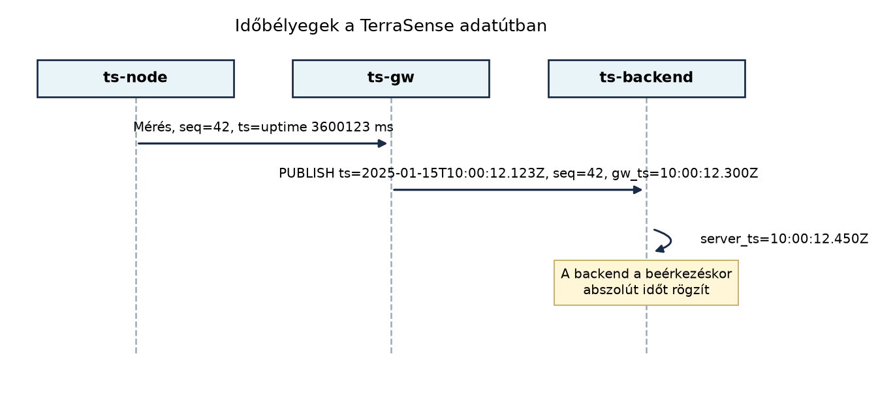

A TerraSense üvegházban a ts-node reggel 7:00-kor méri a
talajnedvességet, és a háttérrendszernek pontosan tudnia kell, mikor
nyitotta ki az öntözőszelepet. A mikrovezérlő órajele azonban nem
atomóra: egy olcsó, 20 ppm-es kvarc már naponta több mint másfél
másodpercet tévedhet, és a native_sim vagy egy valós kártya
kikapcsolás után nem őrzi meg a pontos időt. Ráadásul az adat útja a
rádiótól a gatewayen át a backendig késleltetésekkel terhelt, így az
„időbélyeg” önmagában nem egyértelmű. Ebben az alfejezetben megtervezzük
a TerraSense időkezelését: hogyan jelöljük az esemény bekövetkeztét,
hogyan szinkronizáljuk az órákat, és hogyan biztosítjuk a mérések helyes
sorrendjét akkor is, ha az üzenetek késve vagy átmenetileg elveszve
érkeznek.
Definíció. Az óraelcsúszás (clock drift) az a jelenség, amikor egy valós órajel frekvenciája a névlegestől eltér; mértékét ppm-ben (parts per million, milliomodrész) adják meg. Az eseményidő az az időpont, amikor a mérés vagy beavatkozás ténylegesen megtörtént; a feldolgozási idő az az időpont, amikor egy komponens (gateway, backend) az adatot fogadta; a monoton óra egy olyan időforrás, amely soha nem csökken, és független a rendszer valós idejű órájától, mert csak a felindulás óta eltelt időt méri.
Egy tipikus MCU, mint a Zephyr által támogatott ARM Cortex-M, gyakran
nem rendelkezik akkumulátoros RTC-vel (Real-Time Clock). Bekapcsoláskor
a belső számláló nulláról indul, és a rendszer csupán azt tudja, mennyi
ideje fut (uptime). A pontos abszolút időt hálózati
szinkronizációval kell megszerezni. A legegyszerűbb megoldás az
SNTP (Simple Network Time Protocol), az NTP (RFC 5905)
egyszerűsített kliense, amely UDP/123 porton kérdezi le a szervertől a
UTC-t. Az eszköz ritkán (pl. óránként vagy boot után) szinkronizál, mert
a rádió bekapcsolása energiát fogyaszt; a két szinkronizálás között az
óra a kvarc pontosságától függően driftel.
Az emberi hiba elkerülésére az UTC-t használjuk (nincs téli/nyári idő, nincs helyi időzóna), és minden időbélyeget ISO 8601 formátumban vagy epoch milliszekundumban (UTC) jelenítünk meg. A TerraSense konvenciója az epoch ms, ahogyan azt az Adatformátumok: JSON, CBOR, Protocol Buffers, SenML alfejezet rögzítette.
Az adatút során háromféle időbélyeg keletkezhet:
| Időbélyeg típus | Ki állítja elő? | Jellemzője |
|---|---|---|
Eszközidő (ts) |
ts-node |
Az esemény tényleges időpontja; pontatlan, ha az óra még nem szinkronizált, de a legközelebb áll az igazsághoz |
Gateway-idő (gw_ts) |
ts-gw |
Az üzenet fogadásának időpontja a gatewayen; pontosabb, de magában foglalja a rádiós késleltetést |
Szerveridő (server_ts) |
ts-backend |
Az üzenet beérkezésének időpontja a backendben; a legmegbízhatóbb, de a legtávolabb van az eseménytől |
Definíció. A relatív időbélyeg az
esemény időpontja az eszköz monoton órája szerint (uptime
milliszekundumban), amelyet a gateway vagy a backend abszolút idővé
számíthat vissza, ha ismeri az eszköz rendszerindítási idejét (pl. egy
korábbi szinkronizációból vagy a gateway boot_time
nyilvántartásából):
.
A sorrend egyértelműsítésére a seq (sequence number)
monoton növekvő sorszám szolgál. Még ha két mérés időbélyege azonos vagy
az óra visszaáll (pl. újraindulás után), a seq megadja,
melyik üzenet keletkezett korábban. A seq a
ts-node által, bootonként 0-tól indul, és minden sikeresen
elküldött üzenetnél eggyel nő; a gateway és a backend a seq
alapján ismeri fel a duplikátumot vagy a hiányt.
A következő diagram a TerraSense tipikus adatútját mutatja a három időbélyeggel:

Az ábrán a ts-node a mérés pillanatában a saját belső
uptime-ját (ts=uptime 3600123 ms) és a seq=42
sorszámot küldi. A ts-gw hozzáteszi a saját fogadási
időpontját (gw_ts), majd a ts-backend a
beérkezéskor elmenti a szerveridőt (server_ts). A későbbi
feldolgozás során az eseményidő az üzenet ts
mezője, ha az eszköz már szinkronizált; különben a gw_ts
(vagy a server_ts) használandó, de ezt a Ingest: MQTT-ből a backendbe, idempotensen és a Store-and-forward: offline működés és visszatöltés
alfejezetek pontosítják.
Az időforrás kiválasztása az energia, a pontosság és a rendelkezésre álló hardver függvénye:
| Időforrás | Pontosság | Energiaigény | Használat a TerraSense-ben |
|---|---|---|---|
| Belső kvarc, nincs szinkron | 10–100 ppm, naponta több másodperc hiba | minimális | Alapértelmezett a költségtakarékos csomópontoknál |
| SNTP/NTP szinkron | néhány ms–s a hálózati késleltetéstől függően | rádióhasználat miatt közepes | A ts-node ritkán (pl. boot után) szinkronizál; a
ts-gw folyamatosan NTP-t futtat |
| RTC külső kristállyal | néhány ppm, de akkumulátort igényel | nagyon alacsony | Opcionális, drágább hardvereken |
| Gateway-idő | 1 ms alatt a helyi RTC-ből | nem terheli az eszközt | Minden továbbított üzenetre rákerül |
| Szerveridő | ms-os pontosság a fogadási oldalon | nem terheli az eszközt | A backend mindig feljegyzi |
A döntési szabály: a pontos eseményidőhöz először próbáljuk
az eszközidőt használni, de csak akkor, ha az eszköz órája
szinkronizált. Ha ez nem elérhető vagy megbízhatatlan, akkor a
gateway-idő a másodlagos, a szerveridő
pedig a végső tartalék. A seq minden esetben kötelező, mert
a sorrendet és az esetleges duplikátumokat ez alapján lehet eldönteni,
függetlenül az órák pontosságától.
Tegyük fel, hogy a ts-node órája 20 ppm-es kvarcon fut,
és a gateway állandóan pontos NTP-szinkronnal rendelkezik. A mérés
2025-01-15 10:00:00 UTC-kor történik, de az eszköz órája az utolsó
szinkronizálás óta 0,8 másodpercet siet. A ts-node ezért
ts=2025-01-15T10:00:00.800Z-t, seq=42-t és
uptime=3600123 ms-ot küld. A ts-gw a
fogadáskor hozzáadja a saját
gw_ts=2025-01-15T10:00:12.300Z-t (a rádiós átvitel és a
gateway sorban állása 11,5 mp késést okozott). A backendben a beérkezés
ideje server_ts=2025-01-15T10:00:12.450Z. A feldolgozó
komponens látja, hogy a ts mező 0,8 mp-vel későbbi a
gateway időbélyegénél, tehát az eszköz órája siet; mivel a
seq=42 és a korábbi seq=41 üzenet időbélyege
közötti különbség 10 másodperc (a mintavételi periódus), a rendszer a
ts mezőt 0,8 mp-cel korrigálja, és az eseményidőt
10:00:00.000 UTC-ként tárolja el. Ezt a korrekciót azonban csak akkor
végezzük el, ha a hiba kisebb, mint egy előre definiált küszöb (pl. 5
másodperc); nagyobb eltérés esetén a gw_ts-t használjuk, és
riasztást adunk az óra újrakalibrálására.
Ez a példa bemutatja a továbbvitt konvenciót: -
Eseményidő: az ts mező, epoch ms UTC-ben;
ha hiányzik vagy érvénytelen, a gw_ts lép a helyébe. -
Sorszám: a seq mező,
uint32_t, monoton növekvő, bootonként újraindulhat, de a
gateway és a backend párosítja a seq-et a node
azonosítójával, és észleli a nem monoton vagy hiányzó értékeket. -
Boot azonosító: opcionálisan a boot_id
mező, amely megkülönbözteti az eszköz újraindulásait, így a
seq újraindulását is.
ts-node-banMunkakönyvtár: ~/iot-labor/i034. Hozzuk
létre, majd a következő Zephyr native_sim alkalmazást
valósítjuk meg, amely bemutatja a relatív időbélyeg és a sorszám
használatát.
mkdir -p ~/iot-labor/i034 && cd ~/iot-labor/i034Hozzuk létre a CMakeLists.txt fájlt:
cmake_minimum_required(VERSION 3.20)
find_package(Zephyr REQUIRED HINTS $ENV{ZEPHYR_BASE})
project(ts_node_time)
target_sources(app PRIVATE src/main.c)A prj.conf fájl:
CONFIG_SYS_CLOCK_TICKS_PER_SEC=1000
CONFIG_PRINTK=yA src/main.c fájlban két szál fut: a mérőszál
periodikusan „mérést” végez, és növeli a seq-et, a
ts mezőt pedig a k_uptime_get_32() értékével
tölti fel.
#include <zephyr/kernel.h>
#include <zephyr/sys/printk.h>
#include <stdint.h>
static uint32_t seq = 0;
static uint32_t last_uptime = 0;
void sensor_thread(void *arg1, void *arg2, void *arg3) {
while (1) {
uint32_t uptime = k_uptime_get_32();
/* Szimulált mérés */
double temp = 22.5 + (seq % 10) * 0.1;
double hum = 55.0 + (seq % 5) * 0.5;
/* Relatív időbélyeg: uptime ms */
printk("seq=%u ts=%u uptime_ms=%u temp=%.1f hum=%.1f\n",
seq, uptime, uptime, temp, hum);
last_uptime = uptime;
seq++;
k_msleep(1000);
}
}
void main(void) {
printk("ts-node time example\n");
k_thread_create(&sensor_thread_data, NULL, 0, sensor_thread, NULL, NULL, NULL,
K_PRIO_PREEMPT(5), 0, K_NO_WAIT);
}Megjegyzés: a k_thread_create paramétereiben a
&sensor_thread_data egy statikusan definiált
veremterület; a példában a tömörség kedvéért elhagytuk a létrehozást, de
a teljes kód a lab könyvtárban megtalálható, ahol a verem
mérete 1024 bájt.
Build és futtatás:
west build -b native_sim . -d build
./build/zephyr/zephyr.exeVárható kimenet (a szimulátoros idő nem valós, illusztratív):
ts-node time example
seq=0 ts=0 uptime_ms=0 temp=22.5 hum=55.0
seq=1 ts=1000 uptime_ms=1000 temp=22.6 hum=55.5
seq=2 ts=2000 uptime_ms=2000 temp=22.7 hum=56.0
...Látható, hogy az uptime ms-ban monoton nő, a
seq minden mérésnél növekszik. Ez a kettős adat elegendő
ahhoz, hogy a gateway vagy a backend akkor is azonosítsa a sorrendet, ha
abszolút idő nem áll rendelkezésre. Továbbvitt
eredmény. Ez a seq és ts (uptime ms)
konvenció kerül be a telemetria-üzenet sémájába, és a Store-and-forward: offline működés és visszatöltés
alfejezet az újraküldés során erre az azonosítóra támaszkodik; a Idősoros adatbázisok és adatmodellezés alfejezet a
TimescaleDB táblába ezt a seq mezőt is elmenti.
A laborban futtassuk a programot 10 másodpercig, és ellenőrizzük,
hogy a seq és az uptime_ms értékek szigorúan
monoton növekednek. A native_sim időalapja a host órájára
támaszkodik, így a lépésköz 1000 ms ± néhány ms pontossággal megjelenik;
valós hardveren a drift méréséhez külső időforrásra van szükség.
Tipikus hibakeresési táblázat:
| Hibatünet | Lehetséges ok | Javítás |
|---|---|---|
A seq nem monoton növekvő |
Az eszköz újraindult, és a számláló nulláról indult | Adjunk hozzá boot_id mezőt, és a gateway/backend a
(node_id, boot_id, seq) hármast használja a sorrendhez |
Az uptime érték ugrik |
A k_uptime_get_32() 32 bites túlcsordulása hosszú futás
után |
Használjunk k_uptime_get() 64 bites változatot, vagy
kezeljük a wraparound-ot a fogyasztóban |
A ts mező abszolút időt tartalmaz, de helytelen
időzónát |
Az eszköz helyi időt küldött | Kötelező az UTC; az eszközön ne tároljunk időzónát, a konverziót a backend végezze |
A gateway gw_ts és a backend server_ts
között nagy a késés |
A broker bemeneti sora túlterhelt | Figyeljük a broker queue hosszát, és a backend skálázásával csökkentsük a feldolgozási időt; a mező puszta jelenléte nem okoz hibát, de a riasztásoknál figyelembe kell venni |
ts-node a beépített RTC-ből helyi időt olvas, a nyári/téli
időszámítás váltásakor az időbélyegek kétértelművé vagy hibássá válnak.
Mindig UTC-t használjunk, és a megjelenítéskor alakítsuk a felhasználó
időzónájára.seq hiánya és az időre hagyatkozás a
sorrendhez. Ha két mérés ugyanabban a milliszekundumban
történik, vagy az óra visszaállítása miatt az időbélyeg csökken, a
backend nem tudja eldönteni a sorrendet. A monoton sorszám (és
opcionálisan a boot_id) kötelező.ts mező értéke 0
vagy az 1970-es epoch, ami hamis riasztásokat okoz. Ilyenkor a relatív
uptime és a gw_ts a helyes választás.k_uptime_get() a rendszer indulásától eltelt időt adja, nem
az epoch időt. A két fogalom nem helyettesíthető: a sorrendhez a
monoton, a rögzített eseményidőhöz a valós (szinkronizált) idő
kell.ts-node órája 3 másodpercet késik a gatewayhez képest, és a
mérési periódus 60 másodperc? Indokolja a választ.sensor_thread
függvényét úgy, hogy a ts mező ne csak az
uptime-ot, hanem egy feltételezett abszolút időt is
tartalmazzon, amelyet a ts-gw-től kapott legutóbbi
szinkronizációs offset segítségével számolunk ki. A ts mező
formátuma legyen epoch_ms UTC; a kiíratásnál jelenjen meg a
korrigált idő is.seq értékek 0, 1,
2, 3, 0, 1, 2… szekvenciát mutatnak ugyanattól a
node_id-től. Mi lehet a probléma, és hogyan javítaná?A backend a ts mezőt használja, ha a késés (3 mp)
kisebb, mint a mintavételi periódus (60 másodperc) fele, tehát az
események sorrendje egyértelmű, és a ts továbbra is a
legközelebbi közelítése az eseményidőnek. Azonban a rendszer riasztást
adhat az óra kalibrálására. Ha a késés nagyobb lenne, mint a periódus
fele, akkor a gw_ts-t kell választani, mert az eszközidő
már megbízhatatlan. A seq mindenképpen megőrzi a
sorrendet.
Az óra elcsúszása havonta: Tehát egy hónap alatt 77,76 másodpercet késik, ha a drift pozitív (az óra lassabb). Ha siet, akkor ennyivel előrébb jár.
A módosított kód kivonata:
static uint64_t boot_epoch_ms = 0; // szinkronizációból kapott érték
static uint64_t last_sync_uptime = 0;
void sync_with_gateway(uint64_t gateway_epoch_ms) {
boot_epoch_ms = gateway_epoch_ms - k_uptime_get_32();
}
void sensor_thread(void *arg1, void *arg2, void *arg3) {
while (1) {
uint32_t uptime = k_uptime_get_32();
uint64_t event_epoch_ms = boot_epoch_ms + uptime; // korrigált abszolút idő
printk("seq=%u ts=%llu uptime_ms=%u ...\n", seq, event_epoch_ms, uptime);
...
}
}A szinkronizáció indítása történhet a main-ből vagy egy
külön szálból; a példában a sync_with_gateway hívás egy
szimulált SNTP-válasz.
A seq újraindulása azt jelzi, hogy az eszköz
újraindult (pl. watchdog, áramkimaradás), és a sorszám számláló
lenullázódott. A backend ezt az (node_id, seq) párosban
észleli, és ha a seq hirtelen kisebb lesz, mint az előző,
újraindulást feltételez. A javítás: az üzenetbe foglaljunk
boot_id mezőt (pl. a boot időbélyege vagy egy véletlen
szám), és a backend a (node_id, boot_id, seq) hármas
alapján azonosítsa a sorozatot. Az újraindulás után a
boot_id változik, így a seq újraindulása nem
okoz hamis duplikátum- vagy hiányérzékelést.
Az alfejezet bevezette az IoT-rendszerek időkezelési alapjait: az
óraelcsúszást (ppm), az SNTP/NTP-szinkronizációt, az eseményidő és a
feldolgozási idő különbségét, valamint a relatív időbélyeg
visszaszámítását. A TerraSense stratégiája három időbélyegre épül: az
eszköz ts mezője (epoch ms UTC, vagy relatív uptime ms
szinkron nélkül), a gateway gw_ts mezője, és a backend
server_ts mezője. A sorrendet a monoton növekvő
seq sorszám és opcionálisan a boot_id
biztosítja. A labor egy native_sim Zephyr-alkalmazást mutat
be, amely a k_uptime_get_32() és a seq
használatával generál időbélyegzett telemetriát. Továbbvitt
eredmény. Az eseményidő (ts) és a sorszám
(seq) mezőket, valamint a boot_id kiegészítést
használja a Store-and-forward: offline működés és
visszatöltés az újraküldések deduplikálására, az Idősoros adatbázisok és adatmodellezés a
TimescaleDB sémában, és a Eseményvezérelt
feldolgozás: Kafka és a kézbesítési szemantika az üzenetek
sorrendjének és idempotenciájának biztosítására.
k_uptime_get, k_uptime_get_32).native_sim board időzítési viselkedése.k_uptime_get_32 túlcsordulási
viselkedésének dokumentációja, valamint a native_sim
időbázisának pontossága a telepített Zephyr-verzióban. A
k_uptime_get_32 32 bites felső határa miatt 49,7 naponként
túlcsordul, amit a termelési kódban kezelni kell; a laborban a 10
másodperces futás ezt nem mutatja meg.